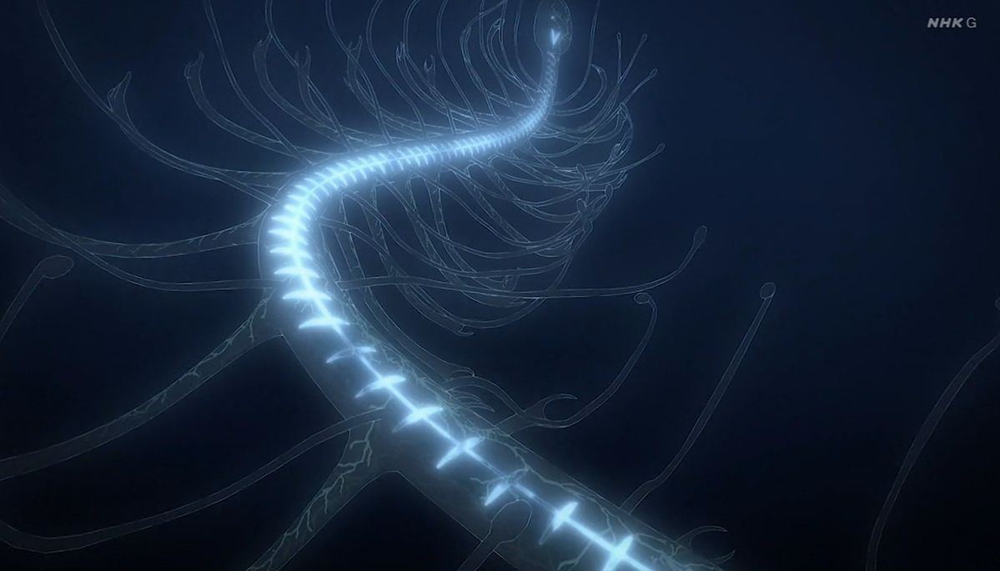
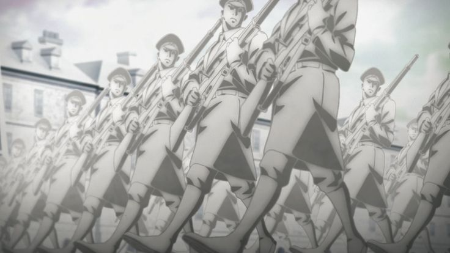

Narratives
Historical Timeline
Embark on a chronological journey linking the artifacts of our history to the Attack on Titan universe. From the giants of Norse mythology to the brutal reality of 20th-century trenches, witness how technology and legend evolved to reshape the destiny of humanity.

"To You, 2000 years from now"
What secrets lie hidden behind the birth of the Titans? Explore the mythic roots of history, where ancient Norse chronicles meet the curse of Ymir. This path, suspended in time, is dedicated to those who wish to decipher forgotten symbols and discover the truth that has traveled through the millennia to reach us.

Publicly Available Information
Technology doesn't just create tools; it rewrites the boundaries of society. Explore the link between war machines and human identity: from Da Vinci's first dreams of flight to the brutal reality of gas masks and identification armbands. Discover how industrial ingenuity armed humanity, leaving an indelible mark on history.